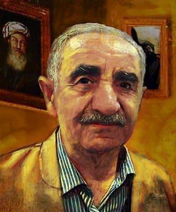

Aziz Gardi

جیهانی بۆ سەر زمانی کوردیی ناوەندی وەرگێڕاوە. ساڵی ١٩٤٧ لە بەحرکەی هەولێر لەدایکبووە، گەردی دەرچووی بەشی زمانی فەڕەنسی بوو لە زانکۆی بەغدا، دواتر لە ساڵانی ١٩٩٤ و ١٩٩٩ بڕوانامەکانی ماستەر و دکتۆرای بەدەستهێنا. ڕۆژی ٦ـی حوزەیرانی ٢٠٢٢ لە شاری هەولێر کۆچی دوایی کرد
ژیان نامە
عەزیز ئەحمەد عەبدوڵڵا، ناسراو بە عەزیز گەردی، لە ساڵی ١٩٤٧ لە هەولێر لەدایکبووە، لە ناحیەی بەحرکەی نزیک شاری هەولێر دەژیا، تاوەکوو ساتی کۆچی دواییشی هاوسەرگیریی نەکردووە. هەر لە منداڵییەوە خولیای خوێندنەوە دەبێت و لە هەرزەکاریدا دەست بە خوێندنەوەی ئەدەبیاتی کوردی و بیانی دەکات، کتێبی زانستەکانی ڕەوانبێژی و عەرووز دەخوێنێتەوە و لای خۆیشی هێدی هێدی یاداشتیان دەکات، وەکو خۆی گوتوویەتی: "لەگەڵ خوێندنەوەی هەر کتێبێکدا، تێبینی و سەرقەڵەمی تایبەتیم دەنووسییەوە، تا وای لێهات چەند دەفتەرێکم پڕ کردەوە". نۆبەرەی بەرهەمەکانی عەزیز گەردی ساڵی ١٩٦٨-١٩٦٩ چاپ و بڵاوکراوەتەوە کە کتێبی ڕەوانبێژییە، بەڵام ئەو کتێبەی لە سەرەتای حەفتاکان چاپ و بڵاودەکاتەوە. دواتر کتێبەکانی ئەدەبی بەراوردکاری، پەخشانی کوردی، ڕابەری شیعری کلاسیکی کوردی و چەندین کتێبی تر دەنووسێت. لە ساڵی ١٩٩٤ ماستەرنامە و لە ساڵی ١٩٩٩ بڕوانامەی دکتۆرا بەدەستدەهێنێت کە تێزەکەی بە ناونیشانی (سەروا)یە، دەزگای ئاراس هەمان ساڵ چاپ و بڵاوی دەکاتەوە. عەزیز گەردی لە چەندین قوتابخانە وانەی گوتووەتەوە و پاشان دوای تەواوکردنی زانکۆ لە کۆلێژی ئاداب، بەشی زمانی کوردی دەبێتە مامۆستا، خۆی لەبەر نەپڕژان بەسەر کاری وەرگێڕاندا دەستلەکاردەکێشێتەوە و بەیەکجاری تەنیایی هەڵدەبژێرێت، خانوویەک لە شارەدێی بەحرکە دەکاتە شوێنی ژیان و نووسینەکانی و بژێویشی لەسەر مووچەی خانەنشینییەکەیەتی. عەزیز گەردی، لەگەڵ ئەوەی کوردیزانێکی کەموێنە بووە و شێوەزارەکانی کورمانجی سەروو، کورمانجی خواروو لەگەڵ هەورامی زانیووە، چوار زمانی جیهانیشی بەباشی زانیووە. بەشی زمانی فەڕەنسی لە زانکۆی بەغدا خوێندووە، زمانەکانی ئینگلیزی، عەرەبی و فارسیشی بەباشی زانیووە.
ەخۆشکەوتن و کۆچی دوایی
چەند مانگێک بەر لە کۆچی دواییی، بەهۆی سستبوونی گورچیلەکانییەوە، عەزیز گەردی چووەتە دەرەوەی وڵات، لەوێ دوای چارەسەر، پزیشک ناچار دەبێت یەکێک لە گورچیلەکانی بۆ دەربێنێت. دوای گەڕانەوەی بۆ هەولێر بە چەند رۆژێک، تاکە گورچیلەکەی دیکەی تووشی ئازار دەبێت. دواتر بەهۆی ئەو ئازارەوە لە ڕۆژی ٢٠٢٢/٦/٦ کۆچی دوایی دەکات.
بەرهەمەکان
عەزیز گەردی، لە شەستەکانی سەدەی ڕابردووەوە دەستی بە نووسین و وەرگێڕان کردووە. کتێبەکانی گەیشتوونەتە ٢٠٠ کتێب بەڵام هەندێکیانی چاپ نەکردووە.
وەرگێڕان
چیرۆکی بەر ئاگردان، ١٩٧٨.
چیرۆکەکانی ئیزۆپ یان لەناو گیانداران دا، نووسینی ئیزۆپ.
لۆرکا: سێ تراژیدی، ١٩٨٤.
(چرا)یەک لەسەر مادیان کۆ، نووسینی مەنسوور یاقووتی.
بیرەوەرییەکانی مامۆستایەک، نووسینی مەنسوور یاقووتی.
لاوەچ، نووسینی مەنسوور یاقووتی.
ئێمە ئەم شیعرەمان نوسیوە.
ئەفسانەی ئەرمەنی، نووسینی چارڵز دونیتگ.
ئەفسانەی ئەفریقی.
ئەفسانەی سلاڤی.
ئەفسانەی کوردی، نووسینی م ب ڕودێنکۆ.
ئەفسانەی ەورکیایی.
بەرکوتێکی ژیانم، نووسینی یەڤجینی یەڤتوشینکۆ.
ئافرەت ڕەگەزی بێکەڵک، نووسینی ئۆریانا فالاچی.
پەنەلۆپە لە جەنگدا، نووسینی ئۆریانا فالاچی.
پیاوێک، نووسینی ئۆریانا فالاچی.
حەفت گفتوگۆ، نووسینی ئۆریانا فالاچی.
ژیان و جەنگ و هیچی تر…، نووسینی ئۆریانا فالاچی.
گفتگۆ لەگەڵ مێژوودا، نووسینی ئۆریانا فالاچی.
نامەیەک بۆ ئەو کۆرپەلە نێرینەی کە هەرگیز لەدایک نەبوو، نووسینی ئۆریانا فالاچی.
ئەگەر خۆر بمرێت، نووسینی ئۆریانا فالاچی.
چیرۆکەکانی کریلۆڤ.
حاجی مراد، نووسینی تۆلستۆی.
خەڵک بەچی دەژی، تۆلستۆی.
کەوێەی دامەنەاری، سلێمانی، ٢٠٠٤.
کاریگەریی گۆرانی لەسەر کوردیی ناوەڕاست، نووسینی میشێل لیزینبێرگ، دەزگای سەردەم، ٢٠٠٤.
درەختی چل داستان، لەنووسینی کەلیموڵڵا تەوەحودی، دەزگای سەردەم، ٢٠٠٧.
داستانی حوسێنی کورد و چەند هەقایەتێکی تر، لەفارسییەوە لەنووسینی ئەحمەد ئازەر ئەفشار، دەزگای سەردەم، ٢٠٠٨.
زارا عەشقی شوان، نووسینی محەممەد قازی، سلێمانی.
رۆمیۆ و جولێت.
یەک چیای گەوهەر: کۆمەڵە چیرۆکێکی ئەفسانەیی گەلان.
کۆمیدیا، سێ بەرگ: دۆزەخ، بەرزەک، بەهەشت، لەنووسینی دانتێ ئەلیگیێری.
داغستانی من.
قۆڵبر، نووسینی عەزیز نەسین.
قوتیل، نووسینی ئەلفۆنیس دۆدی.
مەسەلەک، هێنری ئەلیک.
رەوانبێژی لە ئەدەبی کوردی دا، هەولێر، ١٩٧٢.
ئەدەب و ڕەخنە، بەغداد، ١٩٧٤.
ئەدەبی بێگانان، بەغداد، ١٩٨٢.
جوتیارێکی زیرەک.
پیاوێک
سەروا، هەولێر، ١٩٩٩.
کێشی شیعری کلاسیکیی کوردی، هەولێر: وەزارەتی ڕۆشەنبیری، ١٩٩٩.
رەوانبێژی (روونبێژی، جوانکاری، واەاناسی)، وەزارەتی پەروەردە، ٢٠٠٢.
رابەری کێشی شیعری کلاسیکی لێکۆڵینەوەی ئەدەبی، سلێمانی، ٢٠٠٣.
گەردەلولی مەرگ، هەولێر، ٢٠٠٨.
کێشناسیی کوردی، ٢٠١٤.
سێ دەرمان: هەقایەتی کوردەواری، کۆکردنەوەی عەزیز گەردی.
وەرگێڕان
چیرۆکی بەر ئاگردان، ١٩٧٨.
چیرۆکەکانی ئیزۆپ یان لەناو گیانداران دا، نووسینی ئیزۆپ.
لۆرکا: سێ تراژیدی، ١٩٨٤.
(چرا)یەک لەسەر مادیان کۆ، نووسینی مەنسوور یاقووتی.
بیرەوەرییەکانی مامۆستایەک، نووسینی مەنسوور یاقووتی.
لاوەچ، نووسینی مەنسوور یاقووتی.
ئێمە ئەم شیعرەمان نوسیوە.
ئەفسانەی ئەرمەنی، نووسینی چارڵز دونیتگ.
ئەفسانەی ئەفریقی.
ئەفسانەی سلاڤی.
ئەفسانەی کوردی، نووسینی م ب ڕودێنکۆ.
ئەفسانەی ەورکیایی.
بەرکوتێکی ژیانم، نووسینی یەڤجینی یەڤتوشینکۆ.
ئافرەت ڕەگەزی بێکەڵک، نووسینی ئۆریانا فالاچی.
پەنەلۆپە لە جەنگدا، نووسینی ئۆریانا فالاچی.
پیاوێک، نووسینی ئۆریانا فالاچی.
حەفت گفتوگۆ، نووسینی ئۆریانا فالاچی.
ژیان و جەنگ و هیچی تر…، نووسینی ئۆریانا فالاچی.
گفتگۆ لەگەڵ مێژوودا، نووسینی ئۆریانا فالاچی.
نامەیەک بۆ ئەو کۆرپەلە نێرینەی کە هەرگیز لەدایک نەبوو، نووسینی ئۆریانا فالاچی.
ئەگەر خۆر بمرێت، نووسینی ئۆریانا فالاچی.
چیرۆکەکانی کریلۆڤ.
حاجی مراد، نووسینی تۆلستۆی.
خەڵک بەچی دەژی، تۆلستۆی.
کەوێەی دامەنەاری، سلێمانی، ٢٠٠٤.
کاریگەریی گۆرانی لەسەر کوردیی ناوەڕاست، نووسینی میشێل لیزینبێرگ، دەزگای سەردەم، ٢٠٠٤.
درەختی چل داستان، لەنووسینی کەلیموڵڵا تەوەحودی، دەزگای سەردەم، ٢٠٠٧.
داستانی حوسێنی کورد و چەند هەقایەتێکی تر، لەفارسییەوە لەنووسینی ئەحمەد ئازەر ئەفشار، دەزگای سەردەم، ٢٠٠٨.
زارا عەشقی شوان، نووسینی محەممەد قازی، سلێمانی.
رۆمیۆ و جولێت.
یەک چیای گەوهەر: کۆمەڵە چیرۆکێکی ئەفسانەیی گەلان.
کۆمیدیا، سێ بەرگ: دۆزەخ، بەرزەک، بەهەشت، لەنووسینی دانتێ ئەلیگیێری.
داغستانی من.
قۆڵبر، نووسینی عەزیز نەسین.
قوتیل، نووسینی ئەلفۆنیس دۆدی.
مەسەلەک، هێنری ئەلیک.